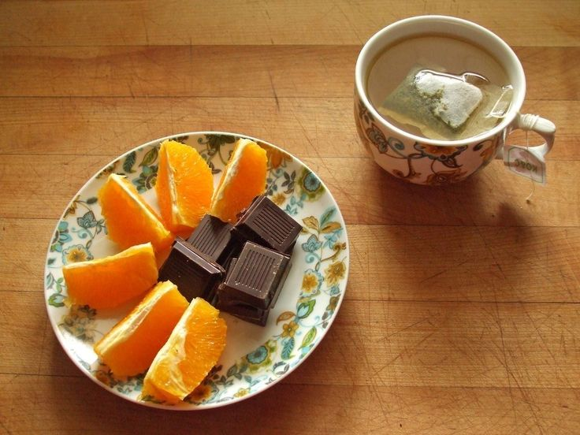

Food is the best way to learn
‧₊˚ ⋅ 𓐐𓎩 ‧₊˚ ⋅
I have loved cooking since I can remember. I'd read cookbooks cover to cover, I loved how big and heavy the books were with loads of pictures. I'd also spend all the time I could with my mum in the kithcen, she'd tell me stories about her life, and I got to help her roll out paratha or keep an eye on the chai so it didn't bubble over!
Since my mum was working I had to cook for myself quite young as well. I'm not particularly good, but feel like I got to learn about other's cutltures, homes and practices through tv shows and youtube videos!
